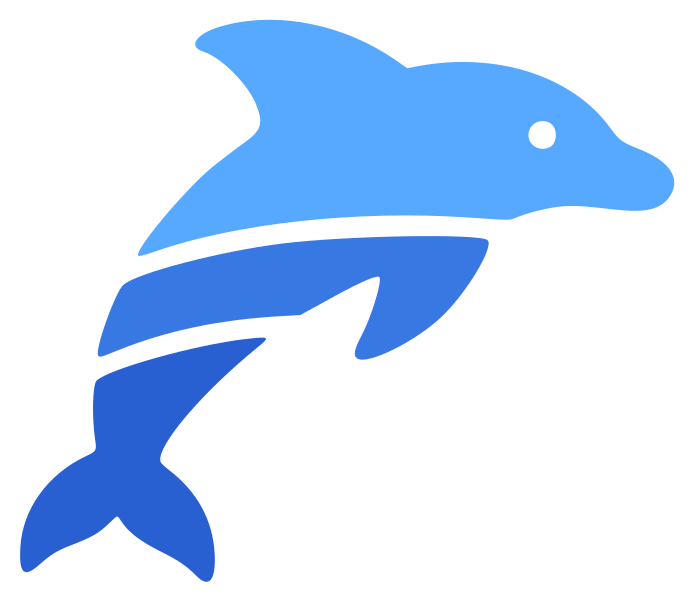

Privacy Policy
Last updated: November 22, 2026
DolphinSlicer is a free, open-source 3D printing slicer that runs in your web browser. This page explains what happens with your data when you use it at dolphinslicer.app.
In short
- Your models are sliced on your own computer. They are never uploaded.
- There are no accounts, no ads, no analytics and no tracking cookies.
- If you turn on Google Drive sync, your data goes to your own Google Drive and nowhere else.
- If you connect an AI assistant, it can read and change your presets and settings in your Drive.
Data in your browser
Your settings, presets, printers and model library are stored in your browser on your device. They are not sent to us. Clearing this site's data in your browser removes them.
Google Drive sync (optional)
If you connect Google Drive, DolphinSlicer asks Google for one permission: access to the files DolphinSlicer
creates in your Drive (drive.file). It cannot see or change any other files in your Drive.
- It keeps your presets, settings, model library and the printers you choose to sync (including their API keys) in a "DolphinSlicer" folder in your Drive.
- For sync, your browser exchanges these files with Google directly. They never pass through our servers.
-
To keep you signed in, a small service on dolphinslicer.app (
/api/auth) completes the Google sign-in and renews access. It keeps Google's renewal token encrypted in a cookie in your browser and stores nothing on the server. Signing out revokes the token and deletes the cookie. You can also remove DolphinSlicer's access at any time in your Google account. - This data is used only to sync your DolphinSlicer setup between your devices, and for the AI assistants you connect (below). It is not shared, sold or used for advertising. DolphinSlicer's use of information received from Google APIs adheres to the Google API Services User Data Policy, including the Limited Use requirements.
AI assistants (optional)
You can connect an AI assistant, such as Claude or ChatGPT, to DolphinSlicer's MCP server
(dolphinslicer.app/mcp). It can then look at your setup and save presets for you.
-
When you connect one, DolphinSlicer shows which app is asking, and you sign in with Google as for Drive sync
(the same
drive.filepermission). - When the assistant uses it, the server reads from your Drive: your presets, the presets you selected, your printer and filament list, units and currency. It saves the presets the assistant changes there. It does not read your models or your printer connections.
- The server passes what it reads to the assistant and stores nothing. The assistant's access is an encrypted token that the assistant keeps and only the server can read.
- What the assistant receives is handled by its provider, under that provider's privacy policy.
- Removing DolphinSlicer's access in your Google account disconnects every assistant, and signs out Drive sync too.
Hosting
DolphinSlicer is hosted on Cloudflare Pages. Like any web host, Cloudflare processes your IP address and request details to deliver the site and protect it from attacks, and your browser may report failed connections to Cloudflare (Network Error Logging). See Cloudflare's privacy policy.
Other sites the app contacts
Only when you use the feature:
- Google, for sign-in and Drive, when you use Drive sync or connect an AI assistant.
- GitHub, when you open the help for a setting: the text comes from the OrcaSlicer wiki.
- The site a "Slice now" link names, to load its model.
- Your printers, at the addresses you enter, when you send G-code or check their status.
Cookies
Only sign-in cookies: the one described above, set when you connect Google Drive, and two short-lived ones while you connect an AI assistant. There are no other cookies.
No warranty
DolphinSlicer is provided as is, without warranty of any kind. G-code drives real hardware: check it before you print. You are responsible for what you print. The software is licensed under the GNU AGPL v3.0 or later.
Contact
Changes
If this policy changes, the date at the top changes too. Earlier versions are in the source repository.